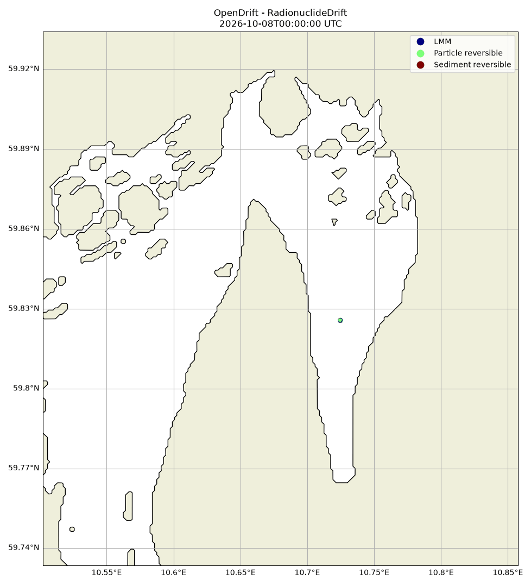
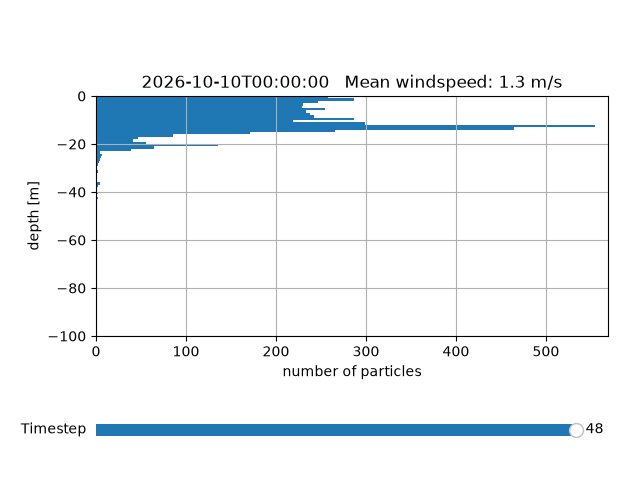
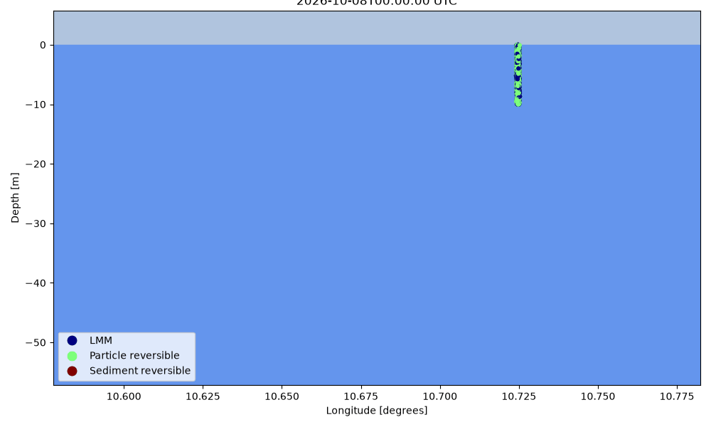

Note
Go to the end to download the full example code.
Radionuclides
from opendrift import test_data_folder as tdf
from opendrift.readers import reader_netCDF_CF_generic
from opendrift.models.radionuclides import RadionuclideDrift
from datetime import timedelta, datetime
import numpy as np
o = RadionuclideDrift(loglevel=20) # Set loglevel to 0 for debug information
# Norkyst
#reader_norkyst = reader_netCDF_CF_generic.Reader(tdf + '/14Jan2016_NorKyst_z_3d/NorKyst-800m_ZDEPTHS_his_00_3Dsubset.nc')
reader_norkyst = reader_netCDF_CF_generic.Reader('https://thredds.met.no/thredds/dodsC/fou-hi/norkystv3_800m_m00_be')
o.add_reader([reader_norkyst])
# Adjusting some configuration
o.set_config('drift:vertical_mixing', True)
#o.set_config('vertical_mixing:diffusivitymodel','constant') # include settling without vertical turbulent mixing
o.set_config('vertical_mixing:diffusivitymodel','environment') # apply vertical diffusivity from ocean model
# Vertical mixing requires fast time step
o.set_config('vertical_mixing:timestep', 600.) # seconds
o.set_config('environment:constant:horizontal_diffusivity', 10)
12:09:52 INFO opendrift:569: OpenDriftSimulation initialised (version 1.14.11 / v1.14.12-45-g2e494c3)
12:09:52 INFO opendrift.readers:67: Opening file with xr.open_dataset
12:09:54 INFO opendrift.readers.reader_netCDF_CF_generic:340: Detected dimensions: {'x': 'X', 'y': 'Y', 'z': 'depth', 'time': 'time'}
12:09:54 INFO opendrift.readers.basereader:175: Variable x_sea_water_velocity will be rotated from eastward_sea_water_velocity
12:09:54 INFO opendrift.readers.basereader:175: Variable y_sea_water_velocity will be rotated from northward_sea_water_velocity
12:09:54 INFO opendrift.readers.basereader:175: Variable x_wind will be rotated from eastward_wind
12:09:54 INFO opendrift.readers.basereader:175: Variable y_wind will be rotated from northward_wind
o.set_config('radionuclide:particle_diameter',5.e-6) # m
o.set_config('radionuclide:sediment:resuspension_depth',2.)
o.set_config('radionuclide:sediment:resuspension_depth_uncert',0.1)
o.set_config('radionuclide:sediment:resuspension_critvel',0.15)
o.set_config('radionuclide:isotope', '137Cs')
o.set_config('radionuclide:specie_setup','LMM + Rev')
# By default, radionuclides do not strand towards coastline
o.set_config('general:coastline_action', 'previous')
o.set_config('general:seafloor_action','lift_to_seafloor')
o.set_config('seed:LMM_fraction',.45)
o.set_config('seed:particle_fraction',.55)
# SEEDING
td=datetime.today()
time = datetime(td.year, td.month, td.day, 0)
lat = 59.825673
lon = 10.724714
ntraj=5000
iniz=np.random.rand(ntraj) * -10. # seeding the radionuclides in the upper 10m
o.seed_elements(lon, lat, z=iniz, radius=10, number=ntraj, time=time)
12:09:54 INFO opendrift.models.radionuclides:338: All good, isotop: 137Cs, species: LMM + Rev
12:09:54 INFO opendrift.models.radionuclides:273: Number of species: 3
12:09:54 INFO opendrift.models.radionuclides:275: 0 LMM
12:09:54 INFO opendrift.models.radionuclides:275: 1 Particle reversible
12:09:54 INFO opendrift.models.radionuclides:275: 2 Sediment reversible
ISOTOPE 137Cs
12:09:54 INFO opendrift.models.radionuclides:523: ISOTOPE 137Cs
12:09:54 INFO opendrift.models.radionuclides:524: SPECIE SETUP LMM + Rev
12:09:54 INFO opendrift.models.radionuclides:525: Kd: 4.0
12:09:54 INFO opendrift.models.radionuclides:418: Initial speciation:
12:09:54 INFO opendrift.models.radionuclides:420: 2238 0 LMM
12:09:54 INFO opendrift.models.radionuclides:420: 2762 1 Particle reversible
12:09:54 INFO opendrift.models.radionuclides:420: 0 2 Sediment reversible
12:09:54 INFO opendrift.models.radionuclides:440: PARTICLE DIAMETER 5e-06
12:09:54 INFO opendrift.models.radionuclides:452: Min: 4.65e-06, Max: 5.37e-06, Numer of particles seeded: 2762, at normal distribution
12:09:54 INFO opendrift.models.basemodel.environment:203: Adding a global landmask from GSHHG
12:09:59 INFO opendrift.models.basemodel.environment:227: Fallback values will be used for the following variables which have no readers:
12:09:59 INFO opendrift.models.basemodel.environment:230: ocean_mixed_layer_thickness: 50.000000
12:09:59 INFO opendrift.models.basemodel.environment:230: conc3: 0.001000
Running model
o.run(duration=timedelta(hours=48), time_step=1800, time_step_output=3600)
12:09:59 INFO opendrift:1921: Storing previous values of element property lon because of condition (('general:coastline_action', 'in', ['stranding', 'previous']), 'or', ('general:seafloor_action', 'in', ['previous']))
12:09:59 INFO opendrift:1921: Storing previous values of element property lat because of condition (('general:coastline_action', 'in', ['stranding', 'previous']), 'or', ('general:seafloor_action', 'in', ['previous']))
12:09:59 INFO opendrift:958: Using existing reader for land_binary_mask to move elements to ocean
12:09:59 INFO opendrift:989: All points are in ocean
12:09:59 INFO opendrift.models.radionuclides:213: Number of species: 3
12:09:59 INFO opendrift.models.radionuclides:215: 0 LMM
12:09:59 INFO opendrift.models.radionuclides:215: 1 Particle reversible
12:09:59 INFO opendrift.models.radionuclides:215: 2 Sediment reversible
12:09:59 INFO opendrift.models.radionuclides:218: Isotope: 137Cs
12:09:59 INFO opendrift.models.radionuclides:219: specie setup: LMM + Rev
12:09:59 INFO opendrift.models.radionuclides:221: nspecies: 3
12:09:59 INFO opendrift.models.radionuclides:222: Transfer rates:
[[0.00000e+00 4.64000e-08 4.34304e-03]
[1.16000e-05 0.00000e+00 0.00000e+00]
[1.16000e-06 0.00000e+00 0.00000e+00]]
12:09:59 INFO opendrift.models.radionuclides:226: DEPTH_INTERVALS: [-25.0, -10.0, -5.0, -1.0]
12:09:59 INFO opendrift:2237: 2026-10-08 00:00:00 - step 1 of 96 - 5000 active elements (0 deactivated)
12:10:03 INFO opendrift.models.radionuclides:779: Number of transformations: 68
12:10:03 INFO opendrift.models.radionuclides:972: Number of resuspended particles: 0
12:10:03 INFO opendrift.models.radionuclides:1026: Speciation: [np.int64(2306), np.int64(2694), np.int64(0)] ['LMM', 'Particle reversible', 'Sediment reversible']
12:10:03 INFO opendrift:2237: 2026-10-08 00:30:00 - step 2 of 96 - 5000 active elements (0 deactivated)
12:10:06 INFO opendrift.models.radionuclides:779: Number of transformations: 51
12:10:06 INFO opendrift.models.radionuclides:972: Number of resuspended particles: 0
12:10:06 INFO opendrift.models.radionuclides:1026: Speciation: [np.int64(2357), np.int64(2643), np.int64(0)] ['LMM', 'Particle reversible', 'Sediment reversible']
12:10:06 INFO opendrift:2237: 2026-10-08 01:00:00 - step 3 of 96 - 5000 active elements (0 deactivated)
12:10:06 INFO opendrift.models.radionuclides:779: Number of transformations: 39
12:10:06 INFO opendrift.models.radionuclides:972: Number of resuspended particles: 0
12:10:06 INFO opendrift.models.radionuclides:1026: Speciation: [np.int64(2396), np.int64(2604), np.int64(0)] ['LMM', 'Particle reversible', 'Sediment reversible']
12:10:06 INFO opendrift:2237: 2026-10-08 01:30:00 - step 4 of 96 - 5000 active elements (0 deactivated)
12:10:09 INFO opendrift.models.radionuclides:779: Number of transformations: 64
12:10:09 INFO opendrift.models.radionuclides:972: Number of resuspended particles: 0
12:10:09 INFO opendrift.models.radionuclides:1026: Speciation: [np.int64(2456), np.int64(2544), np.int64(0)] ['LMM', 'Particle reversible', 'Sediment reversible']
12:10:09 INFO opendrift:2237: 2026-10-08 02:00:00 - step 5 of 96 - 5000 active elements (0 deactivated)
12:10:09 INFO opendrift.models.radionuclides:779: Number of transformations: 55
12:10:09 INFO opendrift.models.radionuclides:972: Number of resuspended particles: 0
12:10:09 INFO opendrift.models.radionuclides:1026: Speciation: [np.int64(2511), np.int64(2489), np.int64(0)] ['LMM', 'Particle reversible', 'Sediment reversible']
12:10:09 INFO opendrift:2237: 2026-10-08 02:30:00 - step 6 of 96 - 5000 active elements (0 deactivated)
12:10:13 INFO opendrift.models.radionuclides:779: Number of transformations: 50
12:10:13 INFO opendrift.models.radionuclides:972: Number of resuspended particles: 0
12:10:13 INFO opendrift.models.radionuclides:1026: Speciation: [np.int64(2561), np.int64(2439), np.int64(0)] ['LMM', 'Particle reversible', 'Sediment reversible']
12:10:13 INFO opendrift:2237: 2026-10-08 03:00:00 - step 7 of 96 - 5000 active elements (0 deactivated)
12:10:13 INFO opendrift.models.radionuclides:779: Number of transformations: 53
12:10:13 INFO opendrift.models.radionuclides:972: Number of resuspended particles: 0
12:10:13 INFO opendrift.models.radionuclides:1026: Speciation: [np.int64(2614), np.int64(2386), np.int64(0)] ['LMM', 'Particle reversible', 'Sediment reversible']
12:10:13 INFO opendrift:2237: 2026-10-08 03:30:00 - step 8 of 96 - 5000 active elements (0 deactivated)
12:10:17 INFO opendrift.models.radionuclides:779: Number of transformations: 59
12:10:17 INFO opendrift.models.radionuclides:972: Number of resuspended particles: 0
12:10:17 INFO opendrift.models.radionuclides:1026: Speciation: [np.int64(2671), np.int64(2329), np.int64(0)] ['LMM', 'Particle reversible', 'Sediment reversible']
12:10:17 INFO opendrift:2237: 2026-10-08 04:00:00 - step 9 of 96 - 5000 active elements (0 deactivated)
12:10:17 INFO opendrift.models.radionuclides:779: Number of transformations: 47
12:10:17 INFO opendrift.models.radionuclides:972: Number of resuspended particles: 0
12:10:17 INFO opendrift.models.radionuclides:1026: Speciation: [np.int64(2718), np.int64(2282), np.int64(0)] ['LMM', 'Particle reversible', 'Sediment reversible']
12:10:17 INFO opendrift:2237: 2026-10-08 04:30:00 - step 10 of 96 - 5000 active elements (0 deactivated)
12:10:22 INFO opendrift.models.radionuclides:779: Number of transformations: 54
12:10:22 INFO opendrift.models.radionuclides:972: Number of resuspended particles: 0
12:10:22 INFO opendrift.models.radionuclides:1026: Speciation: [np.int64(2772), np.int64(2228), np.int64(0)] ['LMM', 'Particle reversible', 'Sediment reversible']
12:10:22 INFO opendrift:2237: 2026-10-08 05:00:00 - step 11 of 96 - 5000 active elements (0 deactivated)
12:10:22 INFO opendrift.models.radionuclides:779: Number of transformations: 50
12:10:22 INFO opendrift.models.radionuclides:972: Number of resuspended particles: 0
12:10:22 INFO opendrift.models.radionuclides:1026: Speciation: [np.int64(2820), np.int64(2179), np.int64(1)] ['LMM', 'Particle reversible', 'Sediment reversible']
12:10:22 INFO opendrift:2237: 2026-10-08 05:30:00 - step 12 of 96 - 5000 active elements (0 deactivated)
12:10:26 INFO opendrift.models.radionuclides:779: Number of transformations: 52
12:10:26 INFO opendrift.models.radionuclides:972: Number of resuspended particles: 0
12:10:26 INFO opendrift.models.radionuclides:1026: Speciation: [np.int64(2864), np.int64(2132), np.int64(4)] ['LMM', 'Particle reversible', 'Sediment reversible']
12:10:26 INFO opendrift:2237: 2026-10-08 06:00:00 - step 13 of 96 - 5000 active elements (0 deactivated)
12:10:26 INFO opendrift.models.radionuclides:779: Number of transformations: 47
12:10:26 INFO opendrift.models.radionuclides:972: Number of resuspended particles: 0
12:10:26 INFO opendrift.models.radionuclides:1026: Speciation: [np.int64(2907), np.int64(2087), np.int64(6)] ['LMM', 'Particle reversible', 'Sediment reversible']
12:10:26 INFO opendrift:2237: 2026-10-08 06:30:00 - step 14 of 96 - 5000 active elements (0 deactivated)
12:10:29 INFO opendrift.models.radionuclides:779: Number of transformations: 45
12:10:29 INFO opendrift.models.radionuclides:972: Number of resuspended particles: 0
12:10:29 INFO opendrift.models.radionuclides:1026: Speciation: [np.int64(2950), np.int64(2043), np.int64(7)] ['LMM', 'Particle reversible', 'Sediment reversible']
12:10:29 INFO opendrift:2237: 2026-10-08 07:00:00 - step 15 of 96 - 5000 active elements (0 deactivated)
12:10:30 INFO opendrift.models.radionuclides:779: Number of transformations: 53
12:10:30 INFO opendrift.models.radionuclides:972: Number of resuspended particles: 0
12:10:30 INFO opendrift.models.radionuclides:1026: Speciation: [np.int64(2999), np.int64(1992), np.int64(9)] ['LMM', 'Particle reversible', 'Sediment reversible']
12:10:30 INFO opendrift:2237: 2026-10-08 07:30:00 - step 16 of 96 - 5000 active elements (0 deactivated)
12:10:33 INFO opendrift.models.radionuclides:779: Number of transformations: 34
12:10:33 INFO opendrift.models.radionuclides:972: Number of resuspended particles: 0
12:10:33 INFO opendrift.models.radionuclides:1026: Speciation: [np.int64(3031), np.int64(1959), np.int64(10)] ['LMM', 'Particle reversible', 'Sediment reversible']
12:10:33 INFO opendrift:2237: 2026-10-08 08:00:00 - step 17 of 96 - 5000 active elements (0 deactivated)
12:10:34 INFO opendrift.models.radionuclides:779: Number of transformations: 42
12:10:34 INFO opendrift.models.radionuclides:972: Number of resuspended particles: 0
12:10:34 INFO opendrift.models.radionuclides:1026: Speciation: [np.int64(3069), np.int64(1919), np.int64(12)] ['LMM', 'Particle reversible', 'Sediment reversible']
12:10:34 INFO opendrift:2237: 2026-10-08 08:30:00 - step 18 of 96 - 5000 active elements (0 deactivated)
12:10:37 INFO opendrift.models.radionuclides:779: Number of transformations: 43
12:10:37 INFO opendrift.models.radionuclides:972: Number of resuspended particles: 0
12:10:37 INFO opendrift.models.radionuclides:1026: Speciation: [np.int64(3098), np.int64(1883), np.int64(19)] ['LMM', 'Particle reversible', 'Sediment reversible']
12:10:37 INFO opendrift:2237: 2026-10-08 09:00:00 - step 19 of 96 - 5000 active elements (0 deactivated)
12:10:37 INFO opendrift.models.radionuclides:779: Number of transformations: 49
12:10:37 INFO opendrift.models.radionuclides:972: Number of resuspended particles: 0
12:10:37 INFO opendrift.models.radionuclides:1026: Speciation: [np.int64(3129), np.int64(1844), np.int64(27)] ['LMM', 'Particle reversible', 'Sediment reversible']
12:10:37 INFO opendrift:2237: 2026-10-08 09:30:00 - step 20 of 96 - 5000 active elements (0 deactivated)
12:10:40 INFO opendrift.models.radionuclides:779: Number of transformations: 35
12:10:40 INFO opendrift.models.radionuclides:972: Number of resuspended particles: 0
12:10:40 INFO opendrift.models.radionuclides:1026: Speciation: [np.int64(3160), np.int64(1812), np.int64(28)] ['LMM', 'Particle reversible', 'Sediment reversible']
12:10:40 INFO opendrift:2237: 2026-10-08 10:00:00 - step 21 of 96 - 5000 active elements (0 deactivated)
12:10:41 INFO opendrift.models.radionuclides:779: Number of transformations: 39
12:10:41 INFO opendrift.models.radionuclides:972: Number of resuspended particles: 0
12:10:41 INFO opendrift.models.radionuclides:1026: Speciation: [np.int64(3189), np.int64(1778), np.int64(33)] ['LMM', 'Particle reversible', 'Sediment reversible']
12:10:41 INFO opendrift:2237: 2026-10-08 10:30:00 - step 22 of 96 - 5000 active elements (0 deactivated)
12:10:44 INFO opendrift.models.radionuclides:779: Number of transformations: 47
12:10:44 INFO opendrift.models.radionuclides:972: Number of resuspended particles: 0
12:10:44 INFO opendrift.models.radionuclides:1026: Speciation: [np.int64(3230), np.int64(1734), np.int64(36)] ['LMM', 'Particle reversible', 'Sediment reversible']
12:10:44 INFO opendrift:2237: 2026-10-08 11:00:00 - step 23 of 96 - 5000 active elements (0 deactivated)
12:10:44 INFO opendrift.models.radionuclides:779: Number of transformations: 30
12:10:44 INFO opendrift.models.radionuclides:972: Number of resuspended particles: 0
12:10:44 INFO opendrift.models.radionuclides:1026: Speciation: [np.int64(3252), np.int64(1708), np.int64(40)] ['LMM', 'Particle reversible', 'Sediment reversible']
12:10:44 INFO opendrift:2237: 2026-10-08 11:30:00 - step 24 of 96 - 5000 active elements (0 deactivated)
12:10:47 INFO opendrift.models.radionuclides:779: Number of transformations: 32
12:10:47 INFO opendrift.models.radionuclides:972: Number of resuspended particles: 0
12:10:47 INFO opendrift.models.radionuclides:1026: Speciation: [np.int64(3274), np.int64(1681), np.int64(45)] ['LMM', 'Particle reversible', 'Sediment reversible']
12:10:47 INFO opendrift:2237: 2026-10-08 12:00:00 - step 25 of 96 - 5000 active elements (0 deactivated)
12:10:47 INFO opendrift.models.radionuclides:779: Number of transformations: 41
12:10:47 INFO opendrift.models.radionuclides:972: Number of resuspended particles: 0
12:10:47 INFO opendrift.models.radionuclides:1026: Speciation: [np.int64(3299), np.int64(1648), np.int64(53)] ['LMM', 'Particle reversible', 'Sediment reversible']
12:10:47 INFO opendrift:2237: 2026-10-08 12:30:00 - step 26 of 96 - 5000 active elements (0 deactivated)
12:10:50 INFO opendrift.models.radionuclides:779: Number of transformations: 43
12:10:50 INFO opendrift.models.radionuclides:972: Number of resuspended particles: 0
12:10:50 INFO opendrift.models.radionuclides:1026: Speciation: [np.int64(3336), np.int64(1608), np.int64(56)] ['LMM', 'Particle reversible', 'Sediment reversible']
12:10:50 INFO opendrift:2237: 2026-10-08 13:00:00 - step 27 of 96 - 5000 active elements (0 deactivated)
12:10:50 INFO opendrift.models.radionuclides:779: Number of transformations: 43
12:10:50 INFO opendrift.models.radionuclides:972: Number of resuspended particles: 0
12:10:50 INFO opendrift.models.radionuclides:1026: Speciation: [np.int64(3375), np.int64(1568), np.int64(57)] ['LMM', 'Particle reversible', 'Sediment reversible']
12:10:50 INFO opendrift:2237: 2026-10-08 13:30:00 - step 28 of 96 - 5000 active elements (0 deactivated)
12:10:53 INFO opendrift.models.radionuclides:779: Number of transformations: 53
12:10:53 INFO opendrift.models.radionuclides:972: Number of resuspended particles: 0
12:10:53 INFO opendrift.models.radionuclides:1026: Speciation: [np.int64(3414), np.int64(1522), np.int64(64)] ['LMM', 'Particle reversible', 'Sediment reversible']
12:10:53 INFO opendrift:2237: 2026-10-08 14:00:00 - step 29 of 96 - 5000 active elements (0 deactivated)
12:10:53 INFO opendrift.models.radionuclides:779: Number of transformations: 36
12:10:53 INFO opendrift.models.radionuclides:972: Number of resuspended particles: 0
12:10:53 INFO opendrift.models.radionuclides:1026: Speciation: [np.int64(3440), np.int64(1492), np.int64(68)] ['LMM', 'Particle reversible', 'Sediment reversible']
12:10:53 INFO opendrift:2237: 2026-10-08 14:30:00 - step 30 of 96 - 5000 active elements (0 deactivated)
12:10:55 INFO opendrift.models.radionuclides:779: Number of transformations: 36
12:10:55 INFO opendrift.models.radionuclides:972: Number of resuspended particles: 0
12:10:55 INFO opendrift.models.radionuclides:1026: Speciation: [np.int64(3470), np.int64(1459), np.int64(71)] ['LMM', 'Particle reversible', 'Sediment reversible']
12:10:55 INFO opendrift:2237: 2026-10-08 15:00:00 - step 31 of 96 - 5000 active elements (0 deactivated)
12:10:55 INFO opendrift.models.radionuclides:779: Number of transformations: 34
12:10:55 INFO opendrift.models.radionuclides:972: Number of resuspended particles: 0
12:10:55 INFO opendrift.models.radionuclides:1026: Speciation: [np.int64(3496), np.int64(1430), np.int64(74)] ['LMM', 'Particle reversible', 'Sediment reversible']
12:10:55 INFO opendrift:2237: 2026-10-08 15:30:00 - step 32 of 96 - 5000 active elements (0 deactivated)
12:10:58 INFO opendrift.models.radionuclides:779: Number of transformations: 35
12:10:58 INFO opendrift.models.radionuclides:972: Number of resuspended particles: 0
12:10:58 INFO opendrift.models.radionuclides:1026: Speciation: [np.int64(3515), np.int64(1404), np.int64(81)] ['LMM', 'Particle reversible', 'Sediment reversible']
12:10:58 INFO opendrift:2237: 2026-10-08 16:00:00 - step 33 of 96 - 5000 active elements (0 deactivated)
12:10:58 INFO opendrift.models.radionuclides:779: Number of transformations: 29
12:10:58 INFO opendrift.models.radionuclides:972: Number of resuspended particles: 0
12:10:58 INFO opendrift.models.radionuclides:1026: Speciation: [np.int64(3528), np.int64(1383), np.int64(89)] ['LMM', 'Particle reversible', 'Sediment reversible']
12:10:58 INFO opendrift:2237: 2026-10-08 16:30:00 - step 34 of 96 - 5000 active elements (0 deactivated)
12:11:01 INFO opendrift.models.radionuclides:779: Number of transformations: 33
12:11:01 INFO opendrift.models.radionuclides:972: Number of resuspended particles: 0
12:11:01 INFO opendrift.models.radionuclides:1026: Speciation: [np.int64(3553), np.int64(1355), np.int64(92)] ['LMM', 'Particle reversible', 'Sediment reversible']
12:11:01 INFO opendrift:2237: 2026-10-08 17:00:00 - step 35 of 96 - 5000 active elements (0 deactivated)
12:11:01 INFO opendrift.models.radionuclides:779: Number of transformations: 38
12:11:01 INFO opendrift.models.radionuclides:972: Number of resuspended particles: 0
12:11:01 INFO opendrift.models.radionuclides:1026: Speciation: [np.int64(3577), np.int64(1324), np.int64(99)] ['LMM', 'Particle reversible', 'Sediment reversible']
12:11:01 INFO opendrift:2237: 2026-10-08 17:30:00 - step 36 of 96 - 5000 active elements (0 deactivated)
12:11:04 INFO opendrift.models.radionuclides:779: Number of transformations: 36
12:11:04 INFO opendrift.models.radionuclides:972: Number of resuspended particles: 0
12:11:04 INFO opendrift.models.radionuclides:1026: Speciation: [np.int64(3601), np.int64(1294), np.int64(105)] ['LMM', 'Particle reversible', 'Sediment reversible']
12:11:04 INFO opendrift:2237: 2026-10-08 18:00:00 - step 37 of 96 - 5000 active elements (0 deactivated)
12:11:05 INFO opendrift.models.radionuclides:779: Number of transformations: 33
12:11:05 INFO opendrift.models.radionuclides:972: Number of resuspended particles: 0
12:11:05 INFO opendrift.models.radionuclides:1026: Speciation: [np.int64(3626), np.int64(1265), np.int64(109)] ['LMM', 'Particle reversible', 'Sediment reversible']
12:11:05 INFO opendrift:2237: 2026-10-08 18:30:00 - step 38 of 96 - 5000 active elements (0 deactivated)
12:11:08 INFO opendrift.models.radionuclides:779: Number of transformations: 36
12:11:08 INFO opendrift.models.radionuclides:972: Number of resuspended particles: 0
12:11:08 INFO opendrift.models.radionuclides:1026: Speciation: [np.int64(3646), np.int64(1237), np.int64(117)] ['LMM', 'Particle reversible', 'Sediment reversible']
12:11:08 INFO opendrift:2237: 2026-10-08 19:00:00 - step 39 of 96 - 5000 active elements (0 deactivated)
12:11:08 INFO opendrift.models.radionuclides:779: Number of transformations: 37
12:11:08 INFO opendrift.models.radionuclides:972: Number of resuspended particles: 0
12:11:08 INFO opendrift.models.radionuclides:1026: Speciation: [np.int64(3673), np.int64(1205), np.int64(122)] ['LMM', 'Particle reversible', 'Sediment reversible']
12:11:08 INFO opendrift:2237: 2026-10-08 19:30:00 - step 40 of 96 - 5000 active elements (0 deactivated)
12:11:10 INFO opendrift.models.radionuclides:779: Number of transformations: 28
12:11:10 INFO opendrift.models.radionuclides:972: Number of resuspended particles: 0
12:11:10 INFO opendrift.models.radionuclides:1026: Speciation: [np.int64(3693), np.int64(1181), np.int64(126)] ['LMM', 'Particle reversible', 'Sediment reversible']
12:11:10 INFO opendrift:2237: 2026-10-08 20:00:00 - step 41 of 96 - 5000 active elements (0 deactivated)
12:11:10 INFO opendrift.models.radionuclides:779: Number of transformations: 28
12:11:10 INFO opendrift.models.radionuclides:972: Number of resuspended particles: 0
12:11:10 INFO opendrift.models.radionuclides:1026: Speciation: [np.int64(3713), np.int64(1157), np.int64(130)] ['LMM', 'Particle reversible', 'Sediment reversible']
12:11:10 INFO opendrift:2237: 2026-10-08 20:30:00 - step 42 of 96 - 5000 active elements (0 deactivated)
12:11:13 INFO opendrift.models.radionuclides:779: Number of transformations: 25
12:11:13 INFO opendrift.models.radionuclides:972: Number of resuspended particles: 0
12:11:13 INFO opendrift.models.radionuclides:1026: Speciation: [np.int64(3736), np.int64(1134), np.int64(130)] ['LMM', 'Particle reversible', 'Sediment reversible']
12:11:13 INFO opendrift:2237: 2026-10-08 21:00:00 - step 43 of 96 - 5000 active elements (0 deactivated)
12:11:13 INFO opendrift.models.radionuclides:779: Number of transformations: 24
12:11:13 INFO opendrift.models.radionuclides:972: Number of resuspended particles: 0
12:11:13 INFO opendrift.models.radionuclides:1026: Speciation: [np.int64(3750), np.int64(1115), np.int64(135)] ['LMM', 'Particle reversible', 'Sediment reversible']
12:11:13 INFO opendrift:2237: 2026-10-08 21:30:00 - step 44 of 96 - 5000 active elements (0 deactivated)
12:11:16 INFO opendrift.models.radionuclides:779: Number of transformations: 29
12:11:16 INFO opendrift.models.radionuclides:972: Number of resuspended particles: 0
12:11:16 INFO opendrift.models.radionuclides:1026: Speciation: [np.int64(3771), np.int64(1090), np.int64(139)] ['LMM', 'Particle reversible', 'Sediment reversible']
12:11:16 INFO opendrift:2237: 2026-10-08 22:00:00 - step 45 of 96 - 5000 active elements (0 deactivated)
12:11:16 INFO opendrift.models.radionuclides:779: Number of transformations: 34
12:11:16 INFO opendrift.models.radionuclides:972: Number of resuspended particles: 0
12:11:16 INFO opendrift.models.radionuclides:1026: Speciation: [np.int64(3797), np.int64(1060), np.int64(143)] ['LMM', 'Particle reversible', 'Sediment reversible']
12:11:16 INFO opendrift:2237: 2026-10-08 22:30:00 - step 46 of 96 - 5000 active elements (0 deactivated)
12:11:18 INFO opendrift.models.radionuclides:779: Number of transformations: 31
12:11:18 INFO opendrift.models.radionuclides:972: Number of resuspended particles: 0
12:11:18 INFO opendrift.models.radionuclides:1026: Speciation: [np.int64(3806), np.int64(1042), np.int64(152)] ['LMM', 'Particle reversible', 'Sediment reversible']
12:11:18 INFO opendrift:2237: 2026-10-08 23:00:00 - step 47 of 96 - 5000 active elements (0 deactivated)
12:11:19 INFO opendrift.models.radionuclides:779: Number of transformations: 21
12:11:19 INFO opendrift.models.radionuclides:972: Number of resuspended particles: 0
12:11:19 INFO opendrift.models.radionuclides:1026: Speciation: [np.int64(3819), np.int64(1025), np.int64(156)] ['LMM', 'Particle reversible', 'Sediment reversible']
12:11:19 INFO opendrift:2237: 2026-10-08 23:30:00 - step 48 of 96 - 5000 active elements (0 deactivated)
12:11:21 INFO opendrift.models.radionuclides:779: Number of transformations: 29
12:11:21 INFO opendrift.models.radionuclides:972: Number of resuspended particles: 0
12:11:21 INFO opendrift.models.radionuclides:1026: Speciation: [np.int64(3834), np.int64(1004), np.int64(162)] ['LMM', 'Particle reversible', 'Sediment reversible']
12:11:21 INFO opendrift:2237: 2026-10-09 00:00:00 - step 49 of 96 - 5000 active elements (0 deactivated)
12:11:21 INFO opendrift.models.radionuclides:779: Number of transformations: 29
12:11:21 INFO opendrift.models.radionuclides:972: Number of resuspended particles: 0
12:11:21 INFO opendrift.models.radionuclides:1026: Speciation: [np.int64(3855), np.int64(979), np.int64(166)] ['LMM', 'Particle reversible', 'Sediment reversible']
12:11:21 INFO opendrift:2237: 2026-10-09 00:30:00 - step 50 of 96 - 5000 active elements (0 deactivated)
12:11:24 INFO opendrift.models.radionuclides:779: Number of transformations: 23
12:11:24 INFO opendrift.models.radionuclides:972: Number of resuspended particles: 0
12:11:24 INFO opendrift.models.radionuclides:1026: Speciation: [np.int64(3866), np.int64(963), np.int64(171)] ['LMM', 'Particle reversible', 'Sediment reversible']
12:11:24 INFO opendrift:2237: 2026-10-09 01:00:00 - step 51 of 96 - 5000 active elements (0 deactivated)
12:11:24 INFO opendrift.models.radionuclides:779: Number of transformations: 22
12:11:24 INFO opendrift.models.radionuclides:972: Number of resuspended particles: 0
12:11:24 INFO opendrift.models.radionuclides:1026: Speciation: [np.int64(3886), np.int64(942), np.int64(172)] ['LMM', 'Particle reversible', 'Sediment reversible']
12:11:24 INFO opendrift:2237: 2026-10-09 01:30:00 - step 52 of 96 - 5000 active elements (0 deactivated)
12:11:28 INFO opendrift.models.radionuclides:779: Number of transformations: 24
12:11:28 INFO opendrift.models.radionuclides:972: Number of resuspended particles: 0
12:11:28 INFO opendrift.models.radionuclides:1026: Speciation: [np.int64(3894), np.int64(926), np.int64(180)] ['LMM', 'Particle reversible', 'Sediment reversible']
12:11:28 INFO opendrift:2237: 2026-10-09 02:00:00 - step 53 of 96 - 5000 active elements (0 deactivated)
12:11:28 INFO opendrift.models.radionuclides:779: Number of transformations: 22
12:11:28 INFO opendrift.models.radionuclides:972: Number of resuspended particles: 0
12:11:28 INFO opendrift.models.radionuclides:1026: Speciation: [np.int64(3908), np.int64(909), np.int64(183)] ['LMM', 'Particle reversible', 'Sediment reversible']
12:11:28 INFO opendrift:2237: 2026-10-09 02:30:00 - step 54 of 96 - 5000 active elements (0 deactivated)
12:11:30 INFO opendrift.models.radionuclides:779: Number of transformations: 20
12:11:31 INFO opendrift.models.radionuclides:972: Number of resuspended particles: 0
12:11:31 INFO opendrift.models.radionuclides:1026: Speciation: [np.int64(3918), np.int64(895), np.int64(187)] ['LMM', 'Particle reversible', 'Sediment reversible']
12:11:31 INFO opendrift:2237: 2026-10-09 03:00:00 - step 55 of 96 - 5000 active elements (0 deactivated)
12:11:31 INFO opendrift.models.radionuclides:779: Number of transformations: 21
12:11:31 INFO opendrift.models.radionuclides:972: Number of resuspended particles: 0
12:11:31 INFO opendrift.models.radionuclides:1026: Speciation: [np.int64(3933), np.int64(879), np.int64(188)] ['LMM', 'Particle reversible', 'Sediment reversible']
12:11:31 INFO opendrift:2237: 2026-10-09 03:30:00 - step 56 of 96 - 5000 active elements (0 deactivated)
12:11:34 INFO opendrift.models.radionuclides:779: Number of transformations: 22
12:11:34 INFO opendrift.models.radionuclides:972: Number of resuspended particles: 0
12:11:34 INFO opendrift.models.radionuclides:1026: Speciation: [np.int64(3943), np.int64(863), np.int64(194)] ['LMM', 'Particle reversible', 'Sediment reversible']
12:11:34 INFO opendrift:2237: 2026-10-09 04:00:00 - step 57 of 96 - 5000 active elements (0 deactivated)
12:11:34 INFO opendrift.models.radionuclides:779: Number of transformations: 19
12:11:34 INFO opendrift.models.radionuclides:972: Number of resuspended particles: 0
12:11:34 INFO opendrift.models.radionuclides:1026: Speciation: [np.int64(3958), np.int64(847), np.int64(195)] ['LMM', 'Particle reversible', 'Sediment reversible']
12:11:34 INFO opendrift:2237: 2026-10-09 04:30:00 - step 58 of 96 - 5000 active elements (0 deactivated)
12:11:37 INFO opendrift.models.radionuclides:779: Number of transformations: 30
12:11:37 INFO opendrift.models.radionuclides:972: Number of resuspended particles: 0
12:11:37 INFO opendrift.models.radionuclides:1026: Speciation: [np.int64(3978), np.int64(822), np.int64(200)] ['LMM', 'Particle reversible', 'Sediment reversible']
12:11:37 INFO opendrift:2237: 2026-10-09 05:00:00 - step 59 of 96 - 5000 active elements (0 deactivated)
12:11:37 INFO opendrift.models.radionuclides:779: Number of transformations: 24
12:11:37 INFO opendrift.models.radionuclides:972: Number of resuspended particles: 0
12:11:37 INFO opendrift.models.radionuclides:1026: Speciation: [np.int64(3984), np.int64(807), np.int64(209)] ['LMM', 'Particle reversible', 'Sediment reversible']
12:11:38 INFO opendrift:2237: 2026-10-09 05:30:00 - step 60 of 96 - 5000 active elements (0 deactivated)
12:11:40 INFO opendrift.models.radionuclides:779: Number of transformations: 21
12:11:40 INFO opendrift.models.radionuclides:972: Number of resuspended particles: 0
12:11:40 INFO opendrift.models.radionuclides:1026: Speciation: [np.int64(3995), np.int64(792), np.int64(213)] ['LMM', 'Particle reversible', 'Sediment reversible']
12:11:40 INFO opendrift:2237: 2026-10-09 06:00:00 - step 61 of 96 - 5000 active elements (0 deactivated)
12:11:40 INFO opendrift.models.radionuclides:779: Number of transformations: 25
12:11:40 INFO opendrift.models.radionuclides:972: Number of resuspended particles: 0
12:11:40 INFO opendrift.models.radionuclides:1026: Speciation: [np.int64(4004), np.int64(775), np.int64(221)] ['LMM', 'Particle reversible', 'Sediment reversible']
12:11:40 INFO opendrift:2237: 2026-10-09 06:30:00 - step 62 of 96 - 5000 active elements (0 deactivated)
12:11:46 INFO opendrift.models.radionuclides:779: Number of transformations: 20
12:11:46 INFO opendrift.models.radionuclides:972: Number of resuspended particles: 0
12:11:46 INFO opendrift.models.radionuclides:1026: Speciation: [np.int64(4012), np.int64(761), np.int64(227)] ['LMM', 'Particle reversible', 'Sediment reversible']
12:11:46 INFO opendrift:2237: 2026-10-09 07:00:00 - step 63 of 96 - 5000 active elements (0 deactivated)
12:11:46 INFO opendrift.models.radionuclides:779: Number of transformations: 25
12:11:46 INFO opendrift.models.radionuclides:972: Number of resuspended particles: 0
12:11:46 INFO opendrift.models.radionuclides:1026: Speciation: [np.int64(4027), np.int64(741), np.int64(232)] ['LMM', 'Particle reversible', 'Sediment reversible']
12:11:46 INFO opendrift:2237: 2026-10-09 07:30:00 - step 64 of 96 - 5000 active elements (0 deactivated)
12:11:49 INFO opendrift.models.radionuclides:779: Number of transformations: 22
12:11:49 INFO opendrift.models.radionuclides:972: Number of resuspended particles: 0
12:11:49 INFO opendrift.models.radionuclides:1026: Speciation: [np.int64(4039), np.int64(724), np.int64(237)] ['LMM', 'Particle reversible', 'Sediment reversible']
12:11:49 INFO opendrift:2237: 2026-10-09 08:00:00 - step 65 of 96 - 5000 active elements (0 deactivated)
12:11:49 INFO opendrift.models.radionuclides:779: Number of transformations: 17
12:11:49 INFO opendrift.models.radionuclides:972: Number of resuspended particles: 0
12:11:49 INFO opendrift.models.radionuclides:1026: Speciation: [np.int64(4044), np.int64(713), np.int64(243)] ['LMM', 'Particle reversible', 'Sediment reversible']
12:11:49 INFO opendrift:2237: 2026-10-09 08:30:00 - step 66 of 96 - 5000 active elements (0 deactivated)
12:11:52 INFO opendrift.models.radionuclides:779: Number of transformations: 15
12:11:52 INFO opendrift.models.radionuclides:972: Number of resuspended particles: 0
12:11:52 INFO opendrift.models.radionuclides:1026: Speciation: [np.int64(4045), np.int64(705), np.int64(250)] ['LMM', 'Particle reversible', 'Sediment reversible']
12:11:52 INFO opendrift:2237: 2026-10-09 09:00:00 - step 67 of 96 - 5000 active elements (0 deactivated)
12:11:52 INFO opendrift.models.radionuclides:779: Number of transformations: 28
12:11:52 INFO opendrift.models.radionuclides:972: Number of resuspended particles: 0
12:11:52 INFO opendrift.models.radionuclides:1026: Speciation: [np.int64(4059), np.int64(685), np.int64(256)] ['LMM', 'Particle reversible', 'Sediment reversible']
12:11:52 INFO opendrift:2237: 2026-10-09 09:30:00 - step 68 of 96 - 5000 active elements (0 deactivated)
12:11:55 INFO opendrift.models.radionuclides:779: Number of transformations: 21
12:11:55 INFO opendrift.models.radionuclides:972: Number of resuspended particles: 0
12:11:55 INFO opendrift.models.radionuclides:1026: Speciation: [np.int64(4072), np.int64(669), np.int64(259)] ['LMM', 'Particle reversible', 'Sediment reversible']
12:11:55 INFO opendrift:2237: 2026-10-09 10:00:00 - step 69 of 96 - 5000 active elements (0 deactivated)
12:11:55 INFO opendrift.models.radionuclides:779: Number of transformations: 18
12:11:55 INFO opendrift.models.radionuclides:972: Number of resuspended particles: 0
12:11:55 INFO opendrift.models.radionuclides:1026: Speciation: [np.int64(4076), np.int64(658), np.int64(266)] ['LMM', 'Particle reversible', 'Sediment reversible']
12:11:55 INFO opendrift:2237: 2026-10-09 10:30:00 - step 70 of 96 - 5000 active elements (0 deactivated)
12:11:58 INFO opendrift.models.radionuclides:779: Number of transformations: 21
12:11:58 INFO opendrift.models.radionuclides:972: Number of resuspended particles: 0
12:11:58 INFO opendrift.models.radionuclides:1026: Speciation: [np.int64(4085), np.int64(643), np.int64(272)] ['LMM', 'Particle reversible', 'Sediment reversible']
12:11:58 INFO opendrift:2237: 2026-10-09 11:00:00 - step 71 of 96 - 5000 active elements (0 deactivated)
12:11:58 INFO opendrift.models.radionuclides:779: Number of transformations: 20
12:11:58 INFO opendrift.models.radionuclides:972: Number of resuspended particles: 0
12:11:58 INFO opendrift.models.radionuclides:1026: Speciation: [np.int64(4099), np.int64(628), np.int64(273)] ['LMM', 'Particle reversible', 'Sediment reversible']
12:11:58 INFO opendrift:2237: 2026-10-09 11:30:00 - step 72 of 96 - 5000 active elements (0 deactivated)
12:12:01 INFO opendrift.models.radionuclides:779: Number of transformations: 20
12:12:01 INFO opendrift.models.radionuclides:972: Number of resuspended particles: 0
12:12:01 INFO opendrift.models.radionuclides:1026: Speciation: [np.int64(4115), np.int64(610), np.int64(275)] ['LMM', 'Particle reversible', 'Sediment reversible']
12:12:01 INFO opendrift:2237: 2026-10-09 12:00:00 - step 73 of 96 - 5000 active elements (0 deactivated)
12:12:01 INFO opendrift.models.radionuclides:779: Number of transformations: 12
12:12:01 INFO opendrift.models.radionuclides:972: Number of resuspended particles: 0
12:12:01 INFO opendrift.models.radionuclides:1026: Speciation: [np.int64(4123), np.int64(602), np.int64(275)] ['LMM', 'Particle reversible', 'Sediment reversible']
12:12:01 INFO opendrift:2237: 2026-10-09 12:30:00 - step 74 of 96 - 5000 active elements (0 deactivated)
12:12:04 INFO opendrift.models.radionuclides:779: Number of transformations: 17
12:12:04 INFO opendrift.models.radionuclides:972: Number of resuspended particles: 0
12:12:04 INFO opendrift.models.radionuclides:1026: Speciation: [np.int64(4132), np.int64(589), np.int64(279)] ['LMM', 'Particle reversible', 'Sediment reversible']
12:12:04 INFO opendrift:2237: 2026-10-09 13:00:00 - step 75 of 96 - 5000 active elements (0 deactivated)
12:12:04 INFO opendrift.models.radionuclides:779: Number of transformations: 9
12:12:04 INFO opendrift.models.radionuclides:972: Number of resuspended particles: 0
12:12:04 INFO opendrift.models.radionuclides:1026: Speciation: [np.int64(4137), np.int64(582), np.int64(281)] ['LMM', 'Particle reversible', 'Sediment reversible']
12:12:04 INFO opendrift:2237: 2026-10-09 13:30:00 - step 76 of 96 - 5000 active elements (0 deactivated)
12:12:06 INFO opendrift.models.radionuclides:779: Number of transformations: 18
12:12:06 INFO opendrift.models.radionuclides:972: Number of resuspended particles: 0
12:12:06 INFO opendrift.models.radionuclides:1026: Speciation: [np.int64(4143), np.int64(573), np.int64(284)] ['LMM', 'Particle reversible', 'Sediment reversible']
12:12:06 INFO opendrift:2237: 2026-10-09 14:00:00 - step 77 of 96 - 5000 active elements (0 deactivated)
12:12:07 INFO opendrift.models.radionuclides:779: Number of transformations: 27
12:12:07 INFO opendrift.models.radionuclides:972: Number of resuspended particles: 0
12:12:07 INFO opendrift.models.radionuclides:1026: Speciation: [np.int64(4148), np.int64(559), np.int64(293)] ['LMM', 'Particle reversible', 'Sediment reversible']
12:12:07 INFO opendrift:2237: 2026-10-09 14:30:00 - step 78 of 96 - 5000 active elements (0 deactivated)
12:12:09 INFO opendrift.models.radionuclides:779: Number of transformations: 13
12:12:09 INFO opendrift.models.radionuclides:972: Number of resuspended particles: 0
12:12:09 INFO opendrift.models.radionuclides:1026: Speciation: [np.int64(4147), np.int64(555), np.int64(298)] ['LMM', 'Particle reversible', 'Sediment reversible']
12:12:09 INFO opendrift:2237: 2026-10-09 15:00:00 - step 79 of 96 - 5000 active elements (0 deactivated)
12:12:09 INFO opendrift.models.radionuclides:779: Number of transformations: 14
12:12:09 INFO opendrift.models.radionuclides:972: Number of resuspended particles: 0
12:12:09 INFO opendrift.models.radionuclides:1026: Speciation: [np.int64(4147), np.int64(548), np.int64(305)] ['LMM', 'Particle reversible', 'Sediment reversible']
12:12:09 INFO opendrift:2237: 2026-10-09 15:30:00 - step 80 of 96 - 5000 active elements (0 deactivated)
12:12:12 INFO opendrift.models.radionuclides:779: Number of transformations: 11
12:12:12 INFO opendrift.models.radionuclides:972: Number of resuspended particles: 0
12:12:12 INFO opendrift.models.radionuclides:1026: Speciation: [np.int64(4150), np.int64(541), np.int64(309)] ['LMM', 'Particle reversible', 'Sediment reversible']
12:12:12 INFO opendrift:2237: 2026-10-09 16:00:00 - step 81 of 96 - 5000 active elements (0 deactivated)
12:12:12 INFO opendrift.models.radionuclides:779: Number of transformations: 17
12:12:12 INFO opendrift.models.radionuclides:972: Number of resuspended particles: 0
12:12:12 INFO opendrift.models.radionuclides:1026: Speciation: [np.int64(4161), np.int64(530), np.int64(309)] ['LMM', 'Particle reversible', 'Sediment reversible']
12:12:12 INFO opendrift:2237: 2026-10-09 16:30:00 - step 82 of 96 - 5000 active elements (0 deactivated)
12:12:15 INFO opendrift.models.radionuclides:779: Number of transformations: 20
12:12:15 INFO opendrift.models.radionuclides:972: Number of resuspended particles: 0
12:12:15 INFO opendrift.models.radionuclides:1026: Speciation: [np.int64(4165), np.int64(519), np.int64(316)] ['LMM', 'Particle reversible', 'Sediment reversible']
12:12:15 INFO opendrift:2237: 2026-10-09 17:00:00 - step 83 of 96 - 5000 active elements (0 deactivated)
12:12:16 INFO opendrift.models.radionuclides:779: Number of transformations: 19
12:12:16 INFO opendrift.models.radionuclides:972: Number of resuspended particles: 0
12:12:16 INFO opendrift.models.radionuclides:1026: Speciation: [np.int64(4174), np.int64(506), np.int64(320)] ['LMM', 'Particle reversible', 'Sediment reversible']
12:12:16 INFO opendrift:2237: 2026-10-09 17:30:00 - step 84 of 96 - 5000 active elements (0 deactivated)
12:12:19 INFO opendrift.models.radionuclides:779: Number of transformations: 19
12:12:19 INFO opendrift.models.radionuclides:972: Number of resuspended particles: 0
12:12:19 INFO opendrift.models.radionuclides:1026: Speciation: [np.int64(4179), np.int64(494), np.int64(327)] ['LMM', 'Particle reversible', 'Sediment reversible']
12:12:19 INFO opendrift:2237: 2026-10-09 18:00:00 - step 85 of 96 - 5000 active elements (0 deactivated)
12:12:19 INFO opendrift.models.radionuclides:779: Number of transformations: 15
12:12:19 INFO opendrift.models.radionuclides:972: Number of resuspended particles: 0
12:12:19 INFO opendrift.models.radionuclides:1026: Speciation: [np.int64(4184), np.int64(485), np.int64(331)] ['LMM', 'Particle reversible', 'Sediment reversible']
12:12:19 INFO opendrift:2237: 2026-10-09 18:30:00 - step 86 of 96 - 5000 active elements (0 deactivated)
12:12:22 INFO opendrift.models.radionuclides:779: Number of transformations: 9
12:12:22 INFO opendrift.models.radionuclides:972: Number of resuspended particles: 0
12:12:22 INFO opendrift.models.radionuclides:1026: Speciation: [np.int64(4187), np.int64(480), np.int64(333)] ['LMM', 'Particle reversible', 'Sediment reversible']
12:12:22 INFO opendrift:2237: 2026-10-09 19:00:00 - step 87 of 96 - 5000 active elements (0 deactivated)
12:12:22 INFO opendrift.models.radionuclides:779: Number of transformations: 15
12:12:22 INFO opendrift.models.radionuclides:972: Number of resuspended particles: 0
12:12:22 INFO opendrift.models.radionuclides:1026: Speciation: [np.int64(4190), np.int64(471), np.int64(339)] ['LMM', 'Particle reversible', 'Sediment reversible']
12:12:23 INFO opendrift:2237: 2026-10-09 19:30:00 - step 88 of 96 - 5000 active elements (0 deactivated)
12:12:25 INFO opendrift.models.radionuclides:779: Number of transformations: 13
12:12:25 INFO opendrift.models.radionuclides:972: Number of resuspended particles: 0
12:12:25 INFO opendrift.models.radionuclides:1026: Speciation: [np.int64(4193), np.int64(464), np.int64(343)] ['LMM', 'Particle reversible', 'Sediment reversible']
12:12:25 INFO opendrift:2237: 2026-10-09 20:00:00 - step 89 of 96 - 5000 active elements (0 deactivated)
12:12:25 INFO opendrift.models.radionuclides:779: Number of transformations: 16
12:12:25 INFO opendrift.models.radionuclides:972: Number of resuspended particles: 0
12:12:25 INFO opendrift.models.radionuclides:1026: Speciation: [np.int64(4195), np.int64(458), np.int64(347)] ['LMM', 'Particle reversible', 'Sediment reversible']
12:12:25 INFO opendrift:2237: 2026-10-09 20:30:00 - step 90 of 96 - 5000 active elements (0 deactivated)
12:12:28 INFO opendrift.models.radionuclides:779: Number of transformations: 20
12:12:28 INFO opendrift.models.radionuclides:972: Number of resuspended particles: 0
12:12:28 INFO opendrift.models.radionuclides:1026: Speciation: [np.int64(4203), np.int64(446), np.int64(351)] ['LMM', 'Particle reversible', 'Sediment reversible']
12:12:28 INFO opendrift:2237: 2026-10-09 21:00:00 - step 91 of 96 - 5000 active elements (0 deactivated)
12:12:28 INFO opendrift.models.radionuclides:779: Number of transformations: 13
12:12:28 INFO opendrift.models.radionuclides:972: Number of resuspended particles: 0
12:12:28 INFO opendrift.models.radionuclides:1026: Speciation: [np.int64(4208), np.int64(437), np.int64(355)] ['LMM', 'Particle reversible', 'Sediment reversible']
12:12:28 INFO opendrift:2237: 2026-10-09 21:30:00 - step 92 of 96 - 5000 active elements (0 deactivated)
12:12:31 INFO opendrift.models.radionuclides:779: Number of transformations: 12
12:12:31 INFO opendrift.models.radionuclides:972: Number of resuspended particles: 0
12:12:31 INFO opendrift.models.radionuclides:1026: Speciation: [np.int64(4210), np.int64(430), np.int64(360)] ['LMM', 'Particle reversible', 'Sediment reversible']
12:12:31 INFO opendrift:2237: 2026-10-09 22:00:00 - step 93 of 96 - 5000 active elements (0 deactivated)
12:12:31 INFO opendrift.models.radionuclides:779: Number of transformations: 11
12:12:31 INFO opendrift.models.radionuclides:972: Number of resuspended particles: 0
12:12:31 INFO opendrift.models.radionuclides:1026: Speciation: [np.int64(4219), np.int64(423), np.int64(358)] ['LMM', 'Particle reversible', 'Sediment reversible']
12:12:32 INFO opendrift:2237: 2026-10-09 22:30:00 - step 94 of 96 - 5000 active elements (0 deactivated)
12:12:35 INFO opendrift.models.radionuclides:779: Number of transformations: 15
12:12:35 INFO opendrift.models.radionuclides:972: Number of resuspended particles: 0
12:12:35 INFO opendrift.models.radionuclides:1026: Speciation: [np.int64(4224), np.int64(414), np.int64(362)] ['LMM', 'Particle reversible', 'Sediment reversible']
12:12:35 INFO opendrift:2237: 2026-10-09 23:00:00 - step 95 of 96 - 5000 active elements (0 deactivated)
12:12:35 INFO opendrift.models.radionuclides:779: Number of transformations: 14
12:12:35 INFO opendrift.models.radionuclides:972: Number of resuspended particles: 0
12:12:35 INFO opendrift.models.radionuclides:1026: Speciation: [np.int64(4226), np.int64(407), np.int64(367)] ['LMM', 'Particle reversible', 'Sediment reversible']
12:12:35 INFO opendrift:2237: 2026-10-09 23:30:00 - step 96 of 96 - 5000 active elements (0 deactivated)
12:12:37 INFO opendrift.models.radionuclides:779: Number of transformations: 16
12:12:37 INFO opendrift.models.radionuclides:972: Number of resuspended particles: 0
12:12:37 INFO opendrift.models.radionuclides:1026: Speciation: [np.int64(4224), np.int64(401), np.int64(375)] ['LMM', 'Particle reversible', 'Sediment reversible']
Print and plot results
print(o)
print('Final speciation:')
for isp,sp in enumerate(o.name_species):
print ('{:32}: {:>6}'.format(sp,sum(o.elements.specie==isp)))
print('Number of transformations:')
for isp in range(o.nspecies):
print('{}'.format(['{:>9}'.format(np.int32(item)) for item in o.ntransformations[isp,:]]) )
o.animation(color='specie',
vmin=0,vmax=o.nspecies-1,
colorbar=False,
legend=[o.specie_num2name(i) for i in range(o.nspecies)],
)
===========================
--------------------
Reader performance:
--------------------
https://thredds.met.no/thredds/dodsC/fou-hi/norkystv3_800m_m00_be
0:02:28.8 total
0:00:00.0 preparing
0:02:27.3 reading
0:00:05.2 interpolation
0:00:00.0 interpolation_time
0:00:01.5 rotating vectors
0:00:00.0 masking
--------------------
constant_reader
0:00:00.0 total
0:00:00.0 preparing
0:00:00.0 reading
0:00:00.0 masking
--------------------
global_landmask
0:00:00.8 total
0:00:00.0 preparing
0:00:00.8 reading
0:00:00.0 masking
--------------------
Performance:
2:45.2 total time
7.4 configuration
0.0 preparing main loop
0.0 moving elements to ocean
2:37.7 main loop
1.5 updating elements
0.4 vertical mixing
0.0 cleaning up
--------------------
===========================
Model: RadionuclideDrift (OpenDrift version 1.14.11)
5000 active Radionuclide particles (0 deactivated, 0 scheduled)
-------------------
Environment variables:
-----
ocean_vertical_diffusivity
sea_floor_depth_below_sea_level
sea_surface_height
sea_water_salinity
sea_water_temperature
upward_sea_water_velocity
x_sea_water_velocity
x_wind
y_sea_water_velocity
y_wind
1) https://thredds.met.no/thredds/dodsC/fou-hi/norkystv3_800m_m00_be
-----
horizontal_diffusivity
1) constant_reader
-----
land_binary_mask
1) global_landmask
-----
Readers not added for the following variables:
conc3
ocean_mixed_layer_thickness
Discarded readers:
Time:
Start: 2026-10-08 00:00:00 UTC
Present: 2026-10-10 00:00:00 UTC
Calculation steps: 96 * 0:30:00 - total time: 2 days, 0:00:00
Output steps: 49 * 1:00:00
===========================
Final speciation:
LMM : 4224
Particle reversible : 401
Sediment reversible : 375
Number of transformations:
[' 0', ' 24', ' 405']
[' 2385', ' 0', ' 0']
[' 30', ' 0', ' 0']
12:12:48 INFO opendrift:4846: Saving animation to /root/project/docs/source/gallery/animations/example_radionuclides_0.gif...
12:13:06 INFO opendrift:3264: Time to make animation: 0:00:28.530195

o.plot_vertical_distribution()
#o.plot_property('specie')
o.animation_profile(color='specie',
vmin=0,vmax=o.nspecies-1,
legend=[o.specie_num2name(i) for i in range(o.nspecies)],
legend_loc =3,
# markersize=10
)

/root/project/opendrift/models/oceandrift.py:664: UserWarning: This figure includes Axes that are not compatible with tight_layout, so results might be incorrect.
tslider = Slider(sliderax, 'Timestep', 0, steps_output-1,
/root/project/opendrift/models/oceandrift.py:706: UserWarning: This figure includes Axes that are not compatible with tight_layout, so results might be incorrect.
fig.canvas.draw_idle()
12:13:06 INFO opendrift:4846: Saving animation to /root/project/docs/source/gallery/animations/example_radionuclides_1.gif...
12:13:15 INFO opendrift:3482: Time to make animation: 0:00:08.517516

# # Postprocessing: write to concentration netcdf file
- o.write_netcdf_radionuclide_density_map(‘radio_conc.nc’, pixelsize_m=500.,
zlevels=[-2.], activity_unit=’Bq’, horizontal_smoothing=True, smoothing_cells=1, time_avg_conc=True, deltat=2., # hours llcrnrlon=4.4, llcrnrlat=59.9, urcrnrlon=4.8, urcrnrlat=60.2,
)
Total running time of the script: (3 minutes 30.105 seconds)